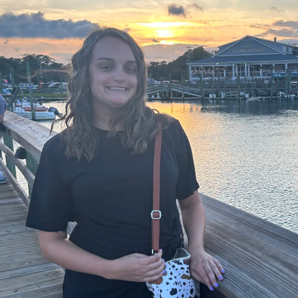
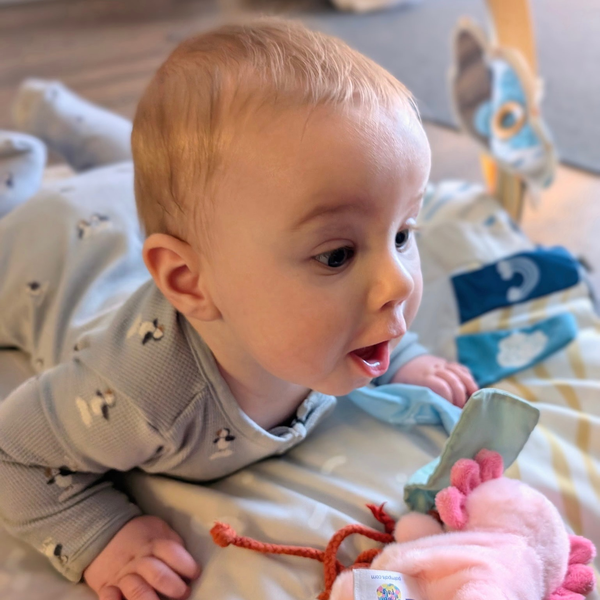

The Wedding Party
Let's Meet the Bride and Groom's Honored Guests!
The Bridesmaids

Working at the CBS affiliate in Raleigh, NC
Fun fact about you?
1) I have seen my future husband, Luke Bryan, in concert six times
2) I have a cross-eyed cat named Chloe
Kayla Morton, Maid of Honor
How did you meet the bride/groom?Working at the CBS affiliate in Raleigh, NC
Fun fact about you?
1) I have seen my future husband, Luke Bryan, in concert six times
2) I have a cross-eyed cat named Chloe
Allison Jevitt, Bridesmaid, Sister of the Groom
How did you meet the bride/groom?I have known Andrew since birth. It has been an absolute blast watching my brother grow up from day one. What an honor to have been a part of his journey. ❤️✨
Fun fact about you?
In grad school, I joined the fencing club because nothing says “stress relief” like sword fighting!🤺🔬
Elise Jevitt, Bridesmaid, Sister-in-Law of the Groom
How did you meet the bride/groom?Fun fact about you?

Lillian McClatchey, Bridesmaid
How did you meet the bride/groom?I met Chloe while surviving the trenches of local television in both Charleston and Raleigh. Instant friends and adventure partners!
Fun fact about you?
I have three jobs but just because I went so hard on my hobbies that they turned into side quests.
The Groomsmen
Aaron Jevitt, Best Man, Brother of the Groom
How did you meet the bride/groom?Fun fact about you?
Ethan Rafferty, Groomsman, Brother of the Bride
How did you meet the bride/groom?Fun fact about you?
Patrick Danylchuk, Groomsman
How did you meet the bride/groom?I met Andrew during Plebe Summer at the Naval Academy. We became roommates freshman year, and the rest is history.
Fun fact about you?
I have spent over a year of my life underwater.
Jude Ampolini, Groomsman
How did you meet the bride/groom?Fun fact about you?
Garrett Richards, Groomsman
How did you meet the bride/groom?Andrew and I met on the USS Benfold in Japan during our first tour in the Navy.
Fun fact about you?
Garrett hails from Hershey, PA, hope of the famous chocolate factory.
The Flower Girl and Ring Bearer
